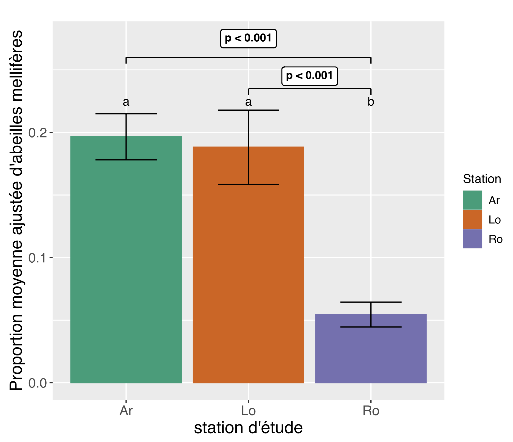
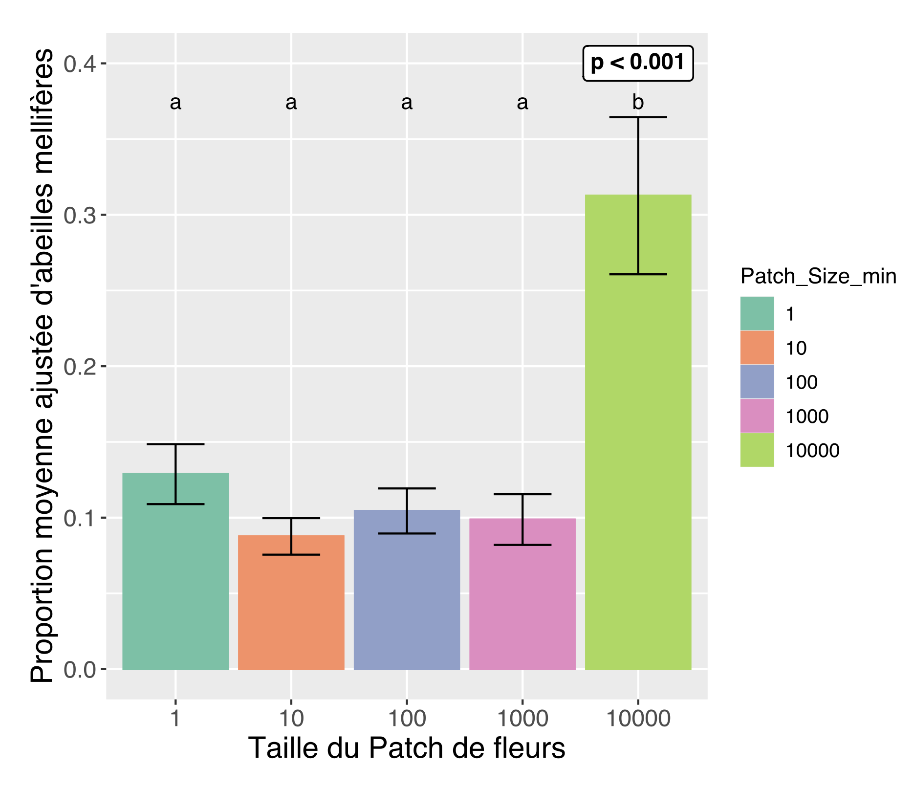
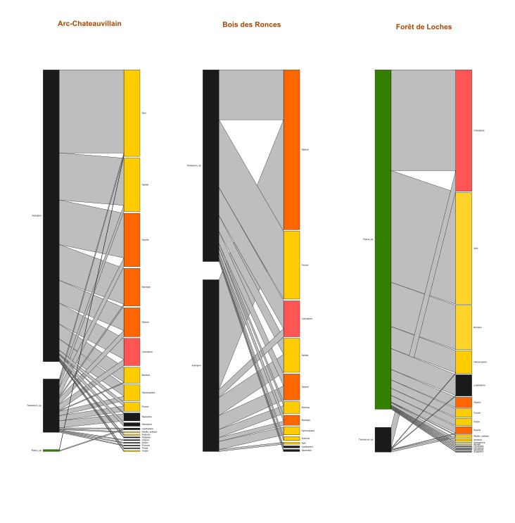

Résumé
Les pollinisateurs sont en déclin, en diversité comme en abondance. Le service de pollinisation soutient pourtant 78 à 98% des plantes sauvages et 76% des plantes de cultures. Les insectes sont les principaux pollinisateurs et parmi eux Apis mellifera est particulièrement importante pour les cultures et plantes sauvages. Domestiquée en ruchers, l’abeille mellifère fait également partie du cortège d’insectes sauvages. Ces populations sauvages sont aujourd’hui peu connues, au point que A. mellifera est classée "Données manquantes" sur la liste rouge de l’UICN. Ce stage vise donc à étudier des colonies d’abeilles mellifères vivant dans des zones naturelles françaises pour aider à établir un statut de conservation IUCN. L’objectif est de suivre la survie des colonies, recenser des nouvelles colonies et estimer leur effectif et densité, observer les choix des ressources florales et l’abondance d’A. mellifera et déterminer la génétique des colonies. Ces études sont menées dans 2 zones forestières françaises : la forêt domaniale de Loches et le Parc National de Forêts. Nos résultats permettent d’affirmer qu’il existe des colonies vivant à l’état sauvages, capables de se maintenir dans le temps. La forêt domaniale de Loches comporte selon nos estimations plus de colonies (n=20) que ce qui aurait été attendu pour les densités estimées dans la littérature, contrairement au PN de Forêts (n=9). Nous n’observons pas de différences entre les proportions moyennes d’A. mellifera entre Loches et la forêt d’Arc, suggérant que la densité de colonies sauvages ne sature pas les fleurs en abeilles mellifères. La majorité des colonies présentes à Loches sont de lignée maternelle indigène tandis que l’inverse est observé dans le parc national de forêts. Cette étude pourrait aider à établir un statut de conservation à l’UICN pour A. mellifera.
Mots-clefs : Conservation – Survie – Colonies sauvages – Suivi – Génétique
Nota Bene : Ce travail est issu d'un stage de fin d'études de 6 mois réalisé en 2023, lors de mon Master 2. Donc : ça vaut ce que ça vaut.
Apis mellifera est reconnue depuis longtemps comme visitant une grande variété de taxa floraux (Gonzalez et al. 1995; Aronne et al. 2012), allant même butiner le pollen de plantes anémogames (Suryanarayana et al. 1992). La valeur d’un patch de fleurs pour une abeille butineuse peut-être défini comme l’efficacité qu’une abeille peut avoir pour en tirer de l’énergie (Bartholdi et al. 1993). Dans ce cas, et puisque qu’une abeille butineuse tend à se spécialiser sur une espèce et un patch de fleurs et à y revenir (Bartholdi et al. 1993), l’intérêt énergétique d’un patch de fleurs devrait augmenter avec sa taille, augmentant de ce fait la quantité de ressources disponibles pour une abeille revenant au même endroit. Les résultats obtenus ici indiquent que cette règle semble bien exister dans le choix des abeilles pour la ressource florale : Pour des patchs floraux dont la taille est estimée supérieure à 10 000 fleurs, nous observons des proportions 2,5 à 3 fois plus élevées d’abeilles mellifères que sur des patchs dont la taille est estimée inférieure à 10 000 fleurs (i.e. entre 1 et 10 ; 10 et 100 ; 100 et 1000 ; et 1000 et 10 000).
Pour autant nous ne pouvons pas affirmer que les patchs comptant entre 1 et 1000 fleurs sont visités en des proportions différentes d’A. mellifera. Nous pouvons suggérer que si la surabondance locale de ressources florales peut induire un nombre accru de visites par A. mellifera, sous un certain seuil d’abondance, ici 10 000, cet effet est dépassé par l’effet d’autres variables influant sur la préférence florale de l’abeille. Ainsi, la quantité de nectar disponible dans une fleur est également un facteur de choix important lors de la recherche de nourriture par A. mellifera (Wells et al. 1981). Nos résultats suggèrent également que la distance entre la ressource florale et la colonie est une variable expliquant assez bien la proportion d’A. mellifera qui peut être observée, confirmant l’idée qu’un patch de fleurs présente de moins en moins d’intérêt énergétique lorsque la distance augmente, demandant un temps de vol plus grand. La relation entre proportion d’A. mellifera prédite et la distance à la colonie semble être proche d’une fonction inverse positive. Il pourrait être intéressant de prédire la distance à une colonie à partir de la proportion observée à un inventaire grâce à ce modèle.
Si le nombre de colonies présentes ou estimées dans la forêt de Loches est supérieur à celui déterminé pour le PN de Forêts, la proportion d’abeilles trouvées par inventaires n’était pas significativement différente que pour les stations d’Arc et de Ronces. Nous pouvons supposer que la pression d’exclusion par compétition exercée par l’espèce est limitée en conditions naturelles. A. mellifera occuperait en moyenne un maximum de 20% du cortège de pollinisateurs.

Proportions moyennes d’Apis mellifera observées pour les 3 sites étudiés, RI d’Arc-Chateauvillain (Ar), Forêt domaniale de Loches (Lo) et RBI du bois des Ronces (Ro), ± SE

Proportions moyennes d’Apis mellifera observées pour des patchs fleuris de différentes tailles, ± SE

Des réseaux d'interactions plantes-pollinisateurs, dans 3 zone naturelles forestières françaises. J'ai effectué des relevé en 2023, le code couleur est donné ci-dessous.
Hyménoptères
Coléoptères
Diptères
Retour